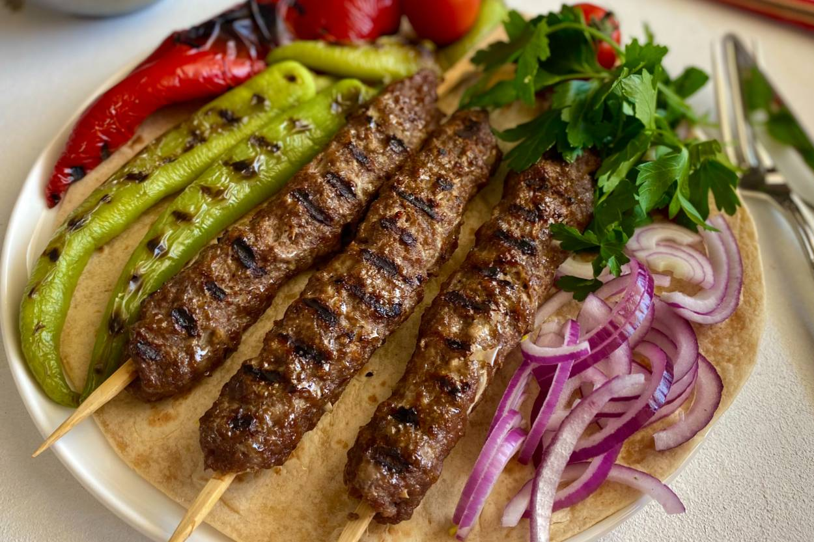
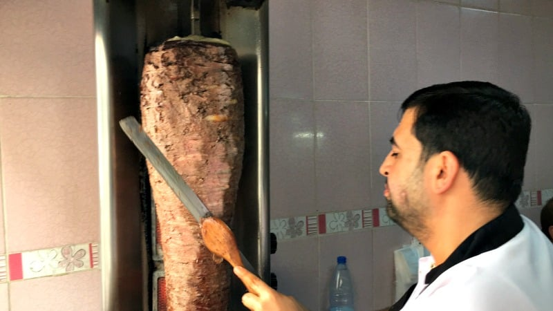

Odin Recipes

Brief Summary of Adana Kebap Recipe
Kebabs of all kinds are common in Turkish and Middle Eastern cuisines. This particular version is named after the city of Adana in Turkey, where it is said to have originated, and is traditionally made of minced lamb mounted on a skewer and grilled over charcoal.
For this recipe, you'll need four metal skewers or wooden skewers that have been soaked in ice-cold water for an hour.
Ingredients
- Dead lamb
- Some onion
- Some Turkish or Indian spices to spice things up!
- Little in the middle, need some cold water.
Steps
- Gather the ingredients!
- Now you combine the ingredients!
- Mix by hand!
- Place in the refrigerator for about 30 minutes to chill.
- Form balls, thread a few onto each skewer, and then mash them together to form the kebab shape.
- Grill the kebabs for approximately 12 minutes!
Do you want more recipes?
If mine was not clear enough here other recipes for you babe.
That's All!
